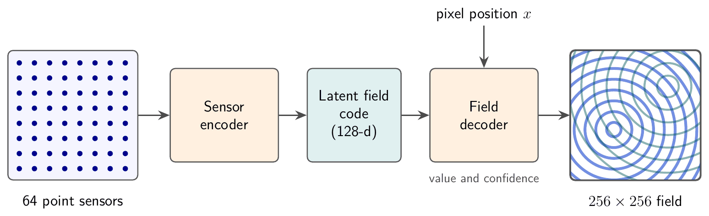
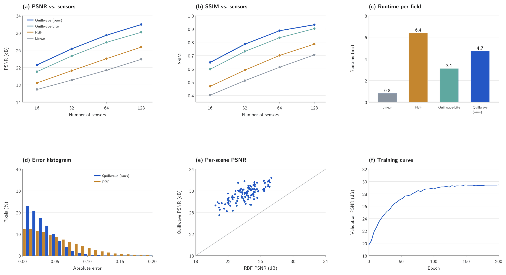
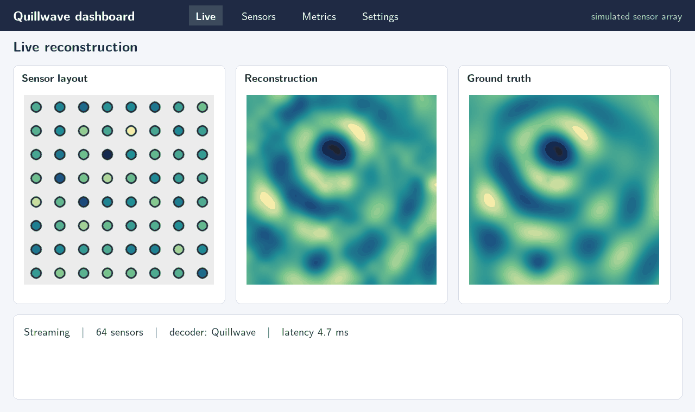

Abstract
Quillwave reconstructs a full 256×256 ripple field from 64 point sensors. Ripple fields are procedurally generated sums of interfering circular waves: cheap to synthesise, but hard to interpolate, because smooth interpolation loses the wave fronts between sensors. Quillwave encodes the sensor readings into a 128-dimensional latent field code and decodes it with a coordinate-based field decoder. On RippleBench-Synthetic, a benchmark of 500 synthetic test fields generated for this work, it reaches 29.46 dB PSNR and 0.887 SSIM, 5.41 dB above radial-basis interpolation (the best baseline), a 71.2% lower mean squared error, and it is 1.36× faster than radial-basis interpolation at inference. All results are on synthetic fields only.
Video
Method

The input is 64 point sensors on a regular 8×8 grid. A sensor encoder maps the readings to a 128-dimensional latent field code, and a coordinate-based field decoder predicts the field value, together with a confidence, at every pixel. Quillwave-Lite is the ablation without the latent code: its decoder is conditioned on the raw readings. The model has 1.2M parameters and was trained on 2000 synthetic fields for 200 epochs.
Results
Quillwave improves PSNR by 5.41 dB over the best baseline, radial-basis interpolation, which is a 71.2% reduction in mean squared error, and it runs 1.36× faster than that baseline. Linear interpolation is the fastest method. In the user study with 20 participants, the mean ease-of-use rating was 4.10 out of 5 and the mean perceived quality 3.90 out of 5.
Table 1. Reconstruction quality on RippleBench-Synthetic (64 sensors, 256×256 fields, mean over 5 training runs). Higher PSNR and SSIM are better; lower runtime is better.
| Method | PSNR (dB) | SSIM | Runtime (ms) |
|---|---|---|---|
| Linear interpolation | 21.37 | 0.612 | 0.8 |
| Radial-basis interpolation | 24.05 | 0.701 | 6.4 |
| Quillwave-Lite (ablation) | 27.82 | 0.834 | 3.1 |
| Quillwave (ours) | 29.46 | 0.887 | 4.7 |

Live dashboard

Limitations
- Baselines are not compute-matched. Quillwave is trained for 3.5 GPU-hours, while the interpolation baselines need no training at all.
- Synthetic fields only. Every result is on RippleBench-Synthetic; no real sensor data was used, and behaviour on real measurements is unknown.
- Confidence is not calibration. The per-pixel confidence map has not been checked against observed error rates, so it should not be read as a calibrated probability.
Acknowledgments
This project was supervised by Dr. Dana Specimen. It received the Best Final Year Project Award 2026 from the Department of Imaginary Sciences, Example University (fictional).
BibTeX
@misc{placeholder2026quillwave,
title = {Quillwave: Sparse-Sensor Reconstruction of Synthetic Ripple Fields},
author = {Ada Placeholder and Ben Example and Cleo Sample},
howpublished = {Final Year Project Report, Example University (fictional), Department of Imaginary Sciences},
year = {2026},
note = {Fictional entry for testing}
}